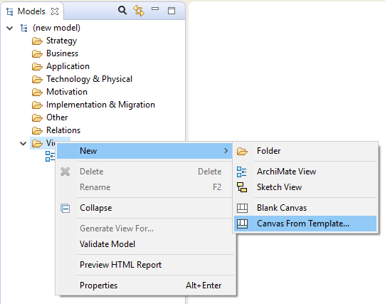

开始使用画布建模工具包的最快方法是基于现有模板创建新的画布。我们将创建一个新的商业模式画布。
画布由9个空的“块”组成。每个块都充当一个容器，可以包含“便利贴”和从调色板添加的其他对象。每个块当前都被锁定，因此您无法移动或调整它的大小。实际上，这些块充当背景容器。每个块还有一个与之关联的文本“提示”，显示在提示窗口中。
从调色板添加“便利贴”并编辑便利贴中的文本以创建您的画布模型：

在画布上添加“便利贴”
商业模式画布根据Creative Commons Attribution-Share Alike 3.0 Unported License获得许可